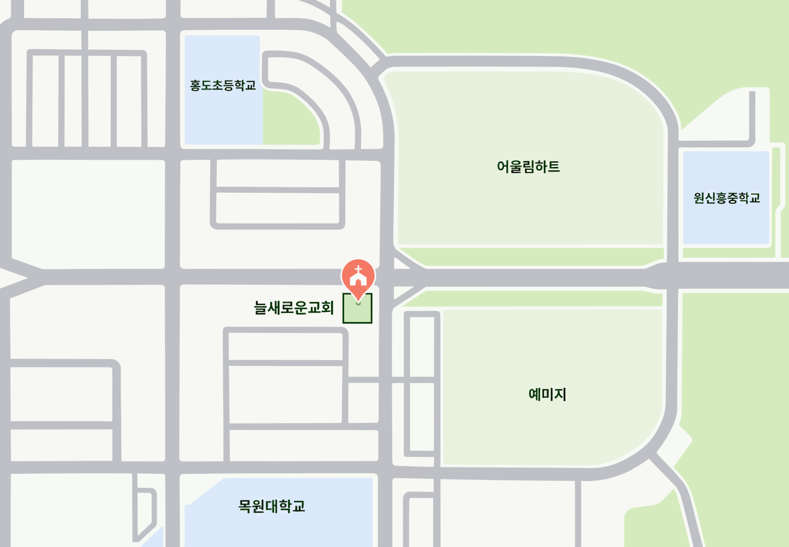

늘새로운교회
기독교한국침례회
지극히 작은 영혼까지 하나님의 사랑을, 땅 끝까지 그리스도의 복음을!
그런즉 누구든지 그리스도 안에 있으면 새로운 피조물이라
이전 것은 지나갔으니 보라 새것이 되었도다
예배 안내
주일 낮 예배
주일 오전 11:00
수요 예배
수요일 저녁 8:00
오시는 길
대전광역시 서구 동서대로 700, 6층 601호(도안동, FM프라임 타워)

주차 건물 지하 1층 주차장을 이용하실 수 있습니다.
문의
- 교회 042-484-5991
- 곽귀일 목사 010-2581-2291